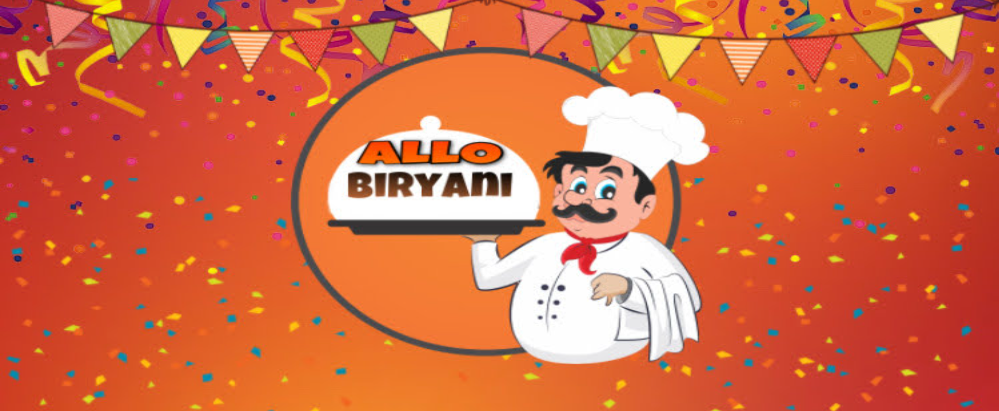
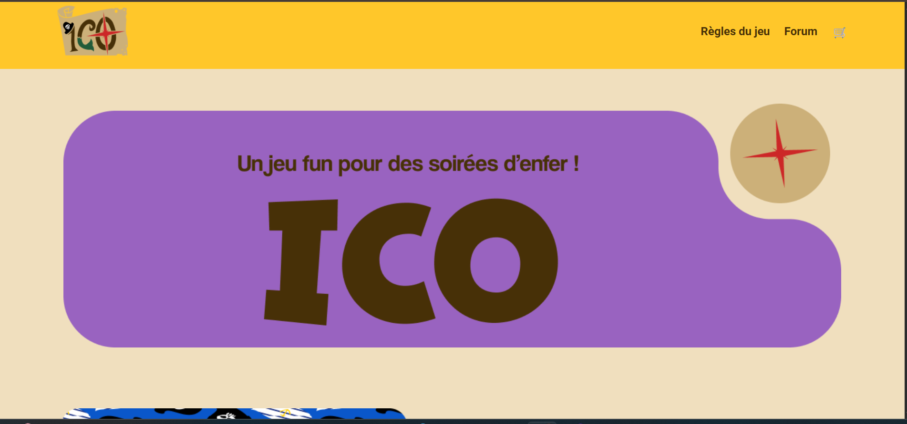
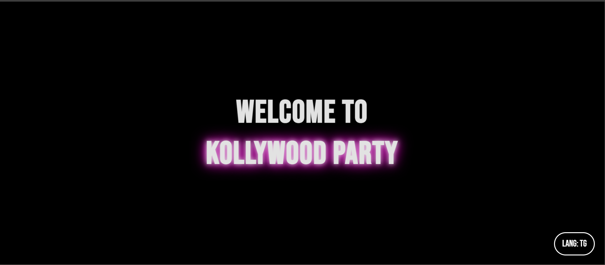

[ ./projets/ ]

projet-biryani.html
Développement d'un site sur un plat indien au lycée.
Cliquez pour voir les détails >_

projet-carte
Développement d'un site sur un jeu de cartes.
Cliquez pour voir les détails >_
Identité visuelle
Création d'identité visuelle pour une cookiterie.
Cliquez pour voir les détails >_

projet-kollywood-party
Mon projet personnel en cours....
Cliquez pour voir les détails >_